We hope that you enjoy exploring data with Stingray.
If you have any questions or would like guidance on using Stingray, please visit our website or send us an email.
QUICKSTART
$ cp «Stingray CD»/Stingray ~
$ cd ~/Stingray
$ ln -s «path to document directory» data/in
$ sh ./bin/stingray.sh
Stingray is SemanticV’s core technology, which helps you explore large amounts of information using concepts.
Learn more about StingrayWelcome to Stingray, SemanticV's core technology for exploring large data sets using concepts. With the following instructions you will be able to use Stingray to build a semantic classifier, a semantic index, and begin exploring your data based on semantics derived from your documents.
Stingray requires Java version 1.5 (download)
To install Stingray, copy the folder titled 'Stingray' to you computer. You'll need to open the command line for your operating system and navigate to this directory. From this directory, execute the shell script `./bin/stingray.sh`
You'll be prompted to specify a semantic classifier and an index.
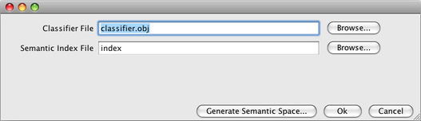If you are just starting out or want to start fresh semantic classifier, choose 'Generate Semantic Space'.
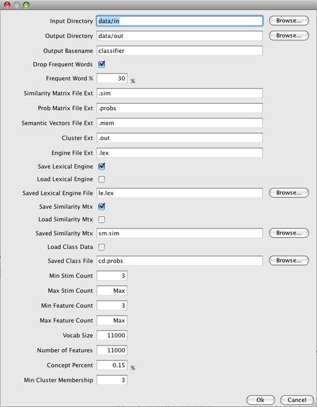While there are many ways in which you can tune your classifier, for now, you'll only need to specify the first three fields. 'Input Directory' is the location of the files with which to base your semantic space. This directory must contain files with the .txt file extention. 'Output Directory' is where the classifier object will be written. 'Output Basename' is the name of the classifier file.
Click OK to begin. You will see a progress bar tracking your classifiers progress. This phase should take about 14 hours. Please get a sandwich and have a seat.
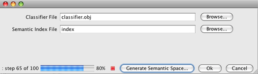When semantic space generation is complete, you can specify your new classifier by browsing. The classifier should be at 'Output Directory'/'Output Basename'.obj.
Once the classifier is generated and properly specified, you will need to provide the location of an existing index, or you can name a new directory to create a new semantic index.
Choose and index location and click OK. If creating a new index, confirm by clicking Yes.
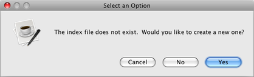You are now in the main window for the Stingray Finder interface.
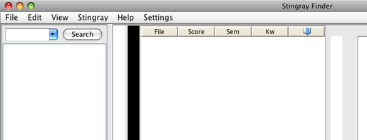Chose 'Index Directory...' and select the directory that contains files you would like to index. This can be the same as 'Input Directory' above.
Be careful to select the directory itself, from the view of the parent directory. Selecting nothing from inside that directory will yield zero results.
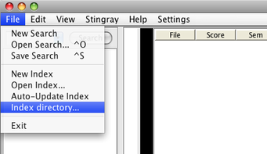A progress bar will appear in the bottom right corner of the Stingray Finder window. This process should take about 3-4 hours per gig in data indexed.
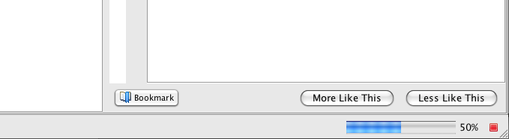When the indexing is finished, you're ready to query.
Now that you have a classifier and an index loaded. You can submit queries. You can seed your query with a keyword in the search box.
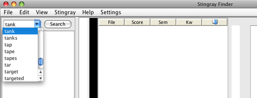Search terms are added to the query and are shown below the search box. From there, you can drill down into your keyword to reveal concepts related to this word in your document set. Each of these lines represents a concept that you can use to refine your query.
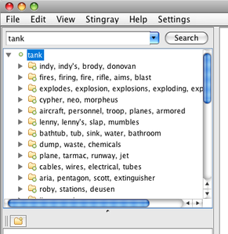You can tune your search to be more conceptual or more exact.
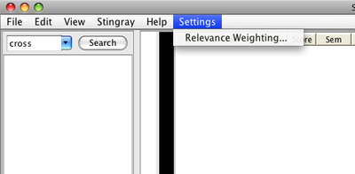 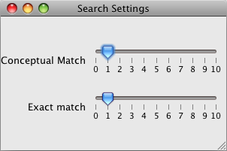We hope you enjoy Stingray and find meaningful applications with the large amounts of data you manage. We are always interested in your needs and appreciate your feedback about the product. Let us know how you use Stingray, email: feedback@semanticv.com
If you need assistance, please email: help@semanticv.com